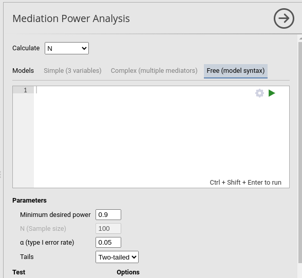
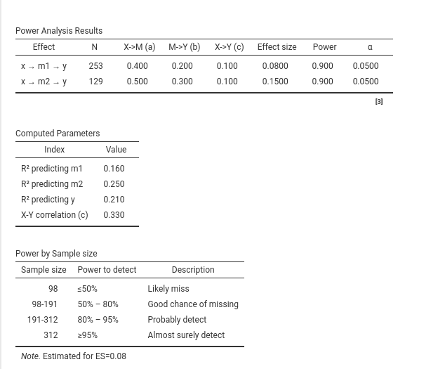
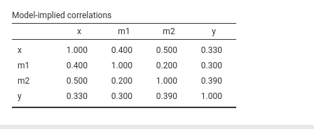
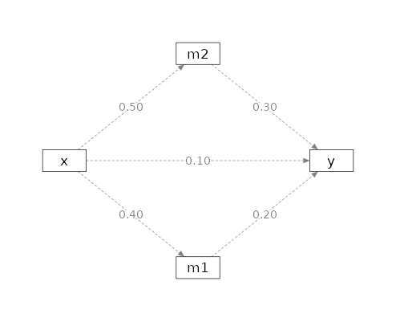

Mediation: free models (model syntax)
keywords power analysis, mediation, indirect effects, model syntax, parallel mediators
1.1.0
Besides the Simple (3 variables) and Complex (multiple mediators) models, PAMLj offers a Free (model syntax) interface that lets you specify any recursive mediation model by typing its equations directly. This is useful when your model does not match one of the predefined templates: several independent variables, an arbitrary number of mediators, serial and parallel pathways combined, multiple outcomes, and so on.

When Free (model syntax) is selected, a syntax editor appears in which the model is written as a set of regression equations. From those equations PAMLj builds the path model, finds every indirect (mediated) effect, and computes the power parameters for each of them.
Model syntax
The model is described with one regression equation per
endogenous variable (every variable that is predicted by
others), written in the familiar lm()/lavaan
style:
Each line reads as outcome ~ predictors. The
example above is the classical simple mediation: x predicts
the mediator m with a standardized coefficient of
.3, and y is predicted by both x
(direct effect c' = .2) and m
(b = .4). The mediated effect x → m → y is the
product of the path coefficients, .3 * .4 = .12.
There are a few rules:
- Every predictor needs a numeric coefficient, passed
with the syntax
value*variable(e.g..4*m). Coefficients are completely standardized path coefficients and their absolute value must lie between.001and.99. - One equation per outcome. A variable can appear on the left-hand side of at most one equation; list all its predictors on that single line.
- No intercepts, interactions or categorical terms.
The model works on standardized coefficients between single variables,
so intercept tokens (
1) are ignored and interaction (x:z) or categorical ([...]) terms are not allowed. - The model must be a proper mediation model: it has to be recursive (no feedback loops) and contain at least one indirect path, i.e. at least one variable that is both an outcome and a predictor. If these conditions are not met, a message explains what is missing.
A typical model with two parallel mediators looks like this:
Here x influences y through two parallel
mediators m1 and m2, plus a direct effect of
.1.
Indirect effects
PAMLj automatically enumerates every
indirect effect in the model — each simple directed path of at least two
edges that goes from an exogenous variable (a source, never
predicted by others) to a final outcome (a sink, that predicts
nothing). Each such effect becomes one row of the results table,
labelled with its path (e.g. x → m1 → y).
For every indirect effect the table reports, as in the other
mediation models, the first path coefficient (a), the
remainder of the product (b), the direct effect
(c) and the mediated effect size ME (the
product of all coefficients along the path).

Note
The power of each indirect effect depends on the test selected (see below). With the joint significance test, two effects that share their weakest path can require the same sample size even when their other coefficients differ, because the shared (weaker) coefficient drives the power.
Minimum detectable effect and sensitivity analysis
When the analysis aim is set to Calculate: Effect size, PAMLj solves for the minimum detectable effect (MDE): given a fixed sample size and the desired power, it finds the smallest indirect effect the design can detect. Because a mediated effect is a product of path coefficients, the answer depends on which coefficient is allowed to change while the others stay fixed, so the first thing to decide is the coefficient to vary.
Choosing the coefficient to vary
By default, PAMLj works on each
indirect effect separately and resizes its first edge
(the path leaving the independent variable, the a path of
that effect). This needs no extra input: just set the aim to the effect
size and read the ME column.
To target a specific coefficient instead — for instance the
b path of a mediator, or a coefficient shared by several
indirect effects — give it a symbolic label in the
syntax and select it with the test: directive. A label is a
letter placed before the value, written
label*value*variable:
Here the coefficient of m1 → y is labelled
a, and test: a (equivalently
test = a) tells PAMLj to
find the minimum detectable effect by resizing that
coefficient. The separator can be either : or
=.
Note
If the label is not defined in the syntax, or the labelled
coefficient is not part of any indirect effect (for example a label put
on the direct x → y path), a message is issued and the
analysis falls back to the per-effect default (resizing each effect’s
first edge).
How the search works
Varying one coefficient
PAMLj resizes the selected coefficient — keeping every other coefficient at its specified value — until the power of the indirect effect(s) that travel through that coefficient reaches the desired level. When the coefficient lies on more than one indirect path (a shared edge), the search drives the weakest of those effects to the target, so that every affected effect reaches at least the requested power. All affected effects are then recomputed at the solved value and reported in the table; effects that do not pass through the coefficient are left unchanged.
For the example above, with test: a, the search resizes
the m1 → y coefficient until the x → m1 → y
effect reaches the desired power, and reports the resulting
ME for that pathway.
The balanced solution
Resizing a single coefficient cannot always reach the requested power. The power of an indirect effect, seen as a function of one of its coefficients, is unimodal: it rises, reaches a peak, and then falls back as the coefficient approaches 1 — at that point the mediator becomes collinear with its predictor and the other coefficients’ standard errors explode. The other coefficients on the path therefore cap the achievable power: if the requested power sits above that peak, no value of the single coefficient can deliver it.
When this happens, PAMLj switches to a balanced solution: instead of moving one coefficient, it grows all the coefficients of the path together to a common value. This removes the single-coefficient bottleneck and can reach any power below 1. A note then reports, for each affected effect, the common coefficient value and the implied indirect effect, for example:
The desired power (0.9) cannot be reached at N = 100 by resizing the selected coefficient alone (its other path coefficients cap the achievable power). The balanced solution is shown instead: for x → m1 → y, all path coefficients set to 0.337 give an indirect effect of ME = 0.114.
If even the balanced solution cannot reach the target at the given sample size, the table reports the largest detectable effect together with the maximum power it yields, and suggests increasing the sample size.
Note
The balanced solution is most useful as a feasibility check: when it appears, it tells you that the chosen sample size is too small for the requested power whatever single coefficient you adjust, and the common value gives a sense of how large every path would have to be to make the design work.
Results
A Priori Power Analysis
The main table reports one row per indirect effect, recapping the
input parameters and the quantity requested in the Compute option (sample size, power, or minimum
detectable effect). The Effect column names the pathway
each row refers to.
Model-implied correlations
Selecting Implied correlations adds a
table with the model-implied correlation matrix among all the variables
of the model, including any correlation set with cor().

Path diagram
When Path diagram is selected, PAMLj draws the model implied by the syntax,
with the variables laid out from the independent variables on the left
to the outcome on the right, and the path coefficients printed on the
arrows. Correlations entered with cor() are shown as curved
double-headed arrows.

Tests and sensitivity
The free interface supports the same tests as the other mediation models — joint significance (Yzerbyt et al. 2018), the Sobel test (Sobel 1982), and the Monte Carlo confidence-interval methods (MacKinnon et al. 2004) — and the same sensitivity plots. Please refer to the main Mediation page for the description of the tests and to the Sensitivity analysis page for the sensitivity analysis.
Comments?
Got comments, issues or spotted a bug? Please open an issue on PAMLj at github or send me an email